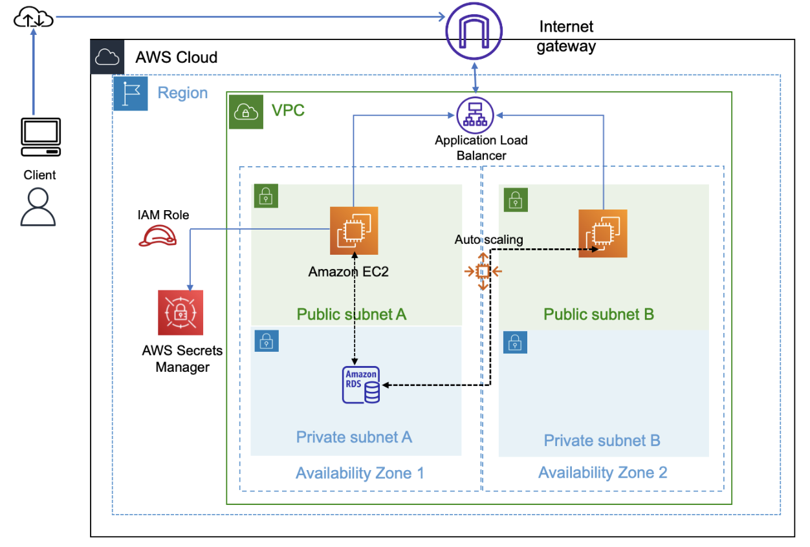
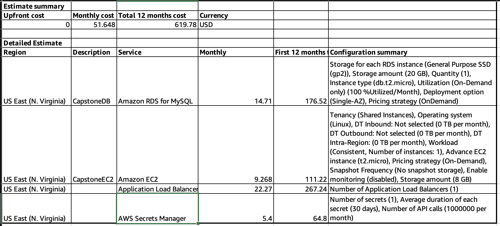
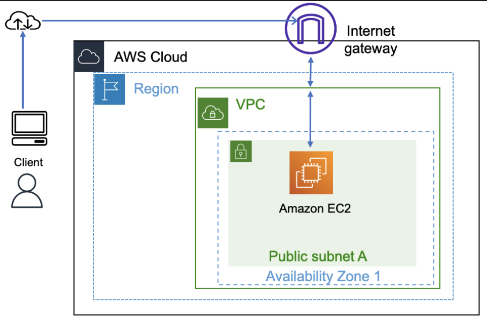
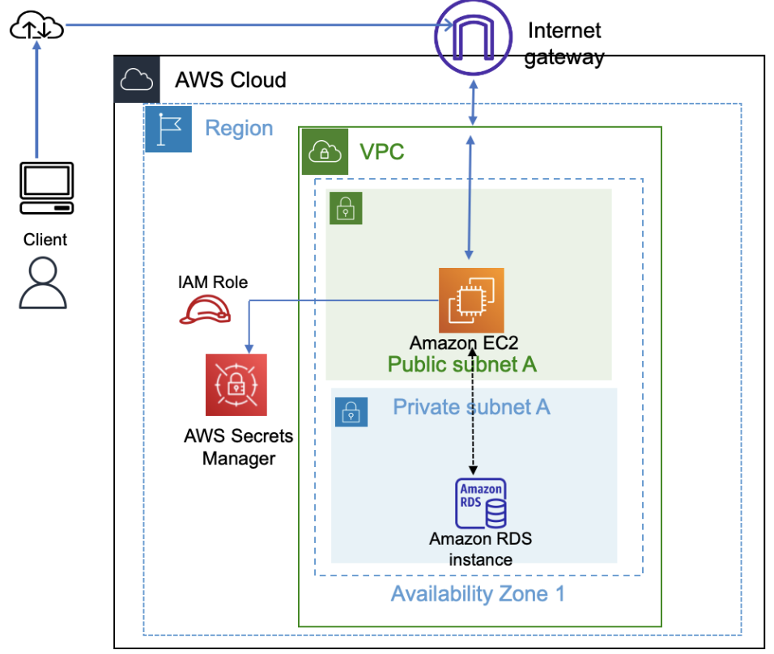

Important: This guide is intended to support your use of the project materials. Use this guide as an answer key to perform the tasks that are mentioned in the lab instructions.
The project is meant to challenge students. The time that it takes students to complete the project will vary depending on student skill level. This project is anticipated to require 8–12 hours to complete.
The lab environment is long lived, meaning that if a student starts the lab on Monday, they could continue working on the lab on Tuesday or any following day. When the student starts the lab environment again, they will find that everything they created in the AWS account is still there, so they can continue where they left off.
You could assign the project to students without spending much time on it in class. However, with that approach, students might struggle because sections of the lab instructions for students don’t provide step-by-step guidance.
The project has been designed with the intent of asking students to complete it over multiple days or weeks. The following sections provide a few suggested approaches that you could take with the project.
Tip: You might want to encourage students to take screen captures or recordings as they complete the work. These assets could be helpful for you to assess student learning, and students could use them in a portfolio of their work when seeking employment.
Option 1: Classroom approach
Suitable for beginner students
You could teach the project through a guided approach with multiple scheduled check-in sessions. For example:
Assign phases 1 and 2 as homework.
During your next class session, check in with students:
Assign phase 3. During your next class session, check in with students:
Assign phase 4. During your next class session, check in with students:
Option 2: Group approach
Suitable when group discussion and study is encouraged
You could teach the project by organizing students into teams.
Option 3: Low-guidance or no-guidance approach
Suitable for advanced students
You could advise advanced students to determine their own approach. They might use a different architecture and technology stack, instead of JavaScript.
This project requires an understanding of core AWS services, such as compute, storage, networking, and database services. The project also requires knowledge of architectural best practices, such as high availability, scalability, and security. Students should have completed the AWS Academy Cloud Architecting course to gain this necessary knowledge.
Students who have completed the AWS Academy Cloud Foundations course and are enrolled in the AWS Academy Cloud Architecting course can also try to complete this project with the help of course materials, labs from courses, and educator guidance.
Knowledge of any programming language, such as Python or JavaScript, is an advantage but isn't mandatory.
This section provides details about how to complete the steps in the project where detailed guidance is not provided to the student. The lab instructions include resource links and references to course materials that might be helpful. Encourage students to use these resources, and use this instructor guide to provide additional guidance as needed.
Note:
Important: The solution in this guide works only if the code snippets are used exactly as instructed without modification.
In this phase, students plan the design of their solution and estimate the cost.
In this task, students create an architectural diagram that illustrates what they plan to build. Resources are provided to help students create the diagram.
The following architecture diagram shows the proposed solution:

References
In this task, students develop a cost estimate to run their solution in the us-east-1 Region for 12 months.
The solution is as follows:
Go to the AWS Pricing Calculator.
Choose Create estimate.
For Choose a Region, choose US East (N. Virginia).
Search for and configure the services that will be used in the solution. Configure each service based on how it will be used.
After all required services are added, choose View summary in the bottom-right corner.
The estimate displays the estimated upfront cost (if any), monthly cost, and total cost for 12 months.
Review the cost estimates for individual services, and adjust the configuration to arrive at the approximate cost.
Export the estimate:
Students should use this estimate to adjust the configuration of their solution.
The following image displays a sample cost estimate. Cost estimates depend on the services that are selected and how they are configured. A student's estimate might be different from this sample.

Important: The AWS Pricing Calculator provides only an estimate of your AWS fees and doesn't include any taxes that might apply. Your actual fees depend on a variety of factors, including your actual usage of AWS services.
Note: You might want to ask students to add the architectural diagram and cost estimate to a presentation to share with the class. You can evaluate these materials as part of the assessment of work on this project.
In this phase, students created an architecture diagram and cost estimate for the proposed solution.
References
In this phase, students start to build the solution. They will configure the virtual network and create a web server.
The following diagram shows various AWS resources that are used to build the architecture for this phase:

In this task, students build the virtual network to host the application. The network configuration includes a virtual private cloud (VPC), an internet gateway, a subnet, and routes.
The solution is as follows:
At the top of the AWS Management Console, in the search bar, search for and choose VPC
Choose Create VPC, and configure the following:
Resources to create: Choose VPC only.
Name tag: Enter CapstoneVPC
IPv4 CIDR: Enter 10.0.0.0/16
Note: The CIDR range that is provided for the VPC configuration is only an example. Students can use a different range as allowed by the lab environment.
Choose Create VPC.
Update the settings for the VPC:
In the navigation pane, choose Internet gateways, and configure the following:
CapstoneIGWAttach the internet gateway to the VPC:
In the navigation pane, choose Subnets, and configure the following:
Public Subnet 110.0.1.0/24In the navigation pane, choose Route tables, and configure the following:
For CapstoneVPC, choose the Route table ID link.
Tip: Look for CapstoneVPC in the VPC column. If the VPC name is not visible, adjust the width of the column.
On the Routes tab (in the lower pane), choose Edit routes.
Choose Add route, and add the following route:
0.0.0.0/0Internet Gateway and then choose CapstoneIGW.Choose Save changes.
In the navigation pane, choose Subnets, and configure the following:
The virtual network resources are now ready. The next step is to put a virtual machine into the network.
Reference
In this task, students create an EC2 instance (virtual machine), and install a web application and database on the instance.
The solution is as follows:
At the top of the AWS Management Console, in the search bar, search for and choose EC2
Choose Launch instance > Launch instance, and then configure the following:
In the Name and tags section, for Name, enter CapstonePOC
In the Application and OS Images section, under Quick Start, choose Ubuntu.
In the Key pair section, for Key pair name, choose vockey.
In the Network settings section, configure the following:
Choose Edit.
VPC: Choose CapstoneVPC.
Auto-assign public IP: Choose Enable.
Firewall (security groups): Choose Create security group.
Security group name: Enter CapstoneAPPSG
Choose Add security group rule.
Keep the existing SSH rule, and add two new rules with the following settings:
New rule 1: For Type, choose HTTP. For Source type, choose Anywhere.
Note: This rule allows traffic from a web browser.
New rule 2: For Type, choose MYSQL/Aurora. For Source, enter 10.0.0.0/16
Note: This rule allows data to be exported from the database in a later task.
Expand the Advanced details section.
For User data, copy and paste the following code:
xxxxxxxxxxapt update -yapt install nodejs unzip wget npm mysql-server -ywget https://aws-tc-largeobjects.s3.us-west-2.amazonaws.com/CUR-TF-200-ACCAP1-1/code.zip -P /home/ubuntucd /home/ubuntuunzip code.zip -x "resources/codebase_partner/node_modules/*"cd resources/codebase_partnernpm install aws aws-sdkmysql -u root -e "CREATE USER 'nodeapp' IDENTIFIED WITH mysql_native_password BY 'student12'";mysql -u root -e "GRANT all privileges on *.* to 'nodeapp'@'%';"mysql -u root -e "CREATE DATABASE STUDENTS;"mysql -u root -e "USE STUDENTS; CREATE TABLE students( id INT NOT NULL AUTO_INCREMENT, name VARCHAR(255) NOT NULL, address VARCHAR(255) NOT NULL, city VARCHAR(255) NOT NULL, state VARCHAR(255) NOT NULL, email VARCHAR(255) NOT NULL, phone VARCHAR(100) NOT NULL, PRIMARY KEY ( id ));"sed -i 's/.*bind-address.*/bind-address = 0.0.0.0/' /etc/mysql/mysql.conf.d/mysqld.cnfsystemctl enable mysqlservice mysql restartexport APP_DB_HOST=$(curl http://169.254.169.254/latest/meta-data/local-ipv4)export APP_DB_USER=nodeappexport APP_DB_PASSWORD=student12export APP_DB_NAME=STUDENTSexport APP_PORT=80npm start &echo '#!/bin/bash -xecd /home/ubuntu/resources/codebase_partnerexport APP_PORT=80npm start' > /etc/rc.localchmod +x /etc/rc.localImportant: Check the formatting of the script after copying it into the user data field. If the code lines appear to be broken, try copying the code from the SolutionCodePOC file.
Note: This script installs Node.js, the student records application (website, JavaScript, CSS, and other files), and the MySQL database on the EC2 instance.
Keep the default values for all other settings, and choose Launch instance.
Important: Before moving to the next task, confirm that the instance is in the Running state and that the Status check column says "2/2 checks passed." This will take a few minutes.
In this task, students test the deployed application to ensure that they can access it and it is functional.
The solution is as follows:
To test the web application, access it from the internet by using the Public IPv4 address or Public IPv4 DNS of the CapstonePOC instance.
Note: Ensure to use http (instead of https) while accessing the web application from the browser.
Perform a few tasks, such as adding new student records, editing records, and deleting records. Keep at least one record in the database so that you have data to migrate to a new database in a later task.
Students now have a functional website that is running on an EC2 instance.
The architecture that students have created so far was quick to build, with few components and a low cost. This approach would be suitable for a proof of concept (POC). However, a monolithic architecture, where all components exist on one virtual machine, is not flexible and is difficult to scale. In the next phase, students will separate the various layers.
After the POC is built on a single virtual machine and is functioning as expected, students proceed to the next level of design to decouple the application and database layers. Separating the layers provides flexibility to the architecture and the ability to scale each layer independently. Security can also be implemented for both layers to enhance the security posture.
The following diagram shows how the architecture might look like after the components are decoupled.

In this task, students modify the network configuration to host an Amazon RDS database separately from the web application.
The solution is as follows:
At the top of the AWS Management Console, in the search bar, search for and choose VPC
Create a new private subnet in CapstoneVPC:
Private Subnet 110.0.2.0/24Now, students need to create a custom route table. They will associate new subnets with the new route table to make the subnets private and accessible only within the VPC.
Create a route table:
In the navigation pane, choose Route tables.
Choose Create route table.
Name: Enter CapstonePrivateRT
VPC: Choose CapstoneVPC.
Choose Create route table.
On the Routes tab, confirm that only one route is listed and that it has the following settings:
Now, students need to create another private subnet to support a new database.
Create another new private subnet in CapstoneVPC:
Private Subnet 210.0.4.0/24Associate a route table to the two private subnets:
The VPC and network are now reconfigured with private subnets in two Availability Zones to host the Amazon RDS database.
Reference
In this task, students configure the Amazon RDS database and create a security group (firewall) for it.
The solution is as follows:
Create a security group for the database:
At the top of the AWS Management Console, in the search bar, search for and choose EC2
In the navigation pane, choose Security Groups.
Choose Create security group, and configure the following:
Security group name: Enter CapstoneDBSG
Description: Enter Security group for database
VPC: Start to enter CapstoneVPC and choose it when it appears.
In the Inbound rules section, choose Add rule and configure the following:
10.0.0.0/16 in the field to the right of Custom.Choose Create security group.
Create the Amazon RDS database:
At the top of the AWS Management Console, in the search bar, search for and choose RDS
Choose Create database.
In the Engine options section, configure the following:
In the Templates section, choose Free tier.
In the Settings section, configure the following:
CapstoneDBnodeappstudent12 and then enter the same in the next field to confirm the password.In the Instance configuration section, for DB instance class, keep the default of db.t3.micro.
In the Storage section, for Allocated storage, enter 20 GiB.
In the Connectivity section, configure the following:
In the Monitoring section, clear Enable Enhanced monitoring if it is selected.
Expand the Additional configuration section, and for Initial database name, enter STUDENTS
Note: Keep all other values as the default. You can modify a few of the parameters as needed after creating the database.
Choose Create database.
Important: Before moving to the next step, confirm that the database status is Available. It will take a few minutes.
When the database is available, find and record the RDS database endpoint:
Reference
In this task, students set up an AWS Cloud9 development environment to perform AWS Command Line Interface (AWS CLI) operations.
The solution is as follows:
At the top of the AWS Management Console, in the search bar, search for and choose Cloud9
Choose Create environment, and then configure the following:
Name: Enter CapstoneIDE
Environment type: Choose New EC2 instance.
Instance type: Choose t2.micro.
In the Network settings section, for Connection, choose Secure Shell (SSH).
Expand the VPC settings section, and configure the following:
Keep all other default settings.
Choose Create.
Important: Before moving to the next task, wait for the AWS Cloud9 environment to be created. It will take a few minutes.
Students should use this AWS Cloud9 development environment to perform tasks that require them to run AWS CLI commands.
Reference
In this task, students provision secrets in AWS Secrets Manager to store the database credentials. The web application will use these credentials to communicate with the RDS database instance.
The solution is as follows:
In the AWS Cloud9 console, open the CapstoneIDE environment.
In the terminal, to create secrets, run the following command. Replace <rds-endpoint> with the endpoint of the CapstoneDB RDS database:
Important: Use the same resource names that are provided in the instructions. Do not modify them.
Note: If the command appears to be broken, try copying the command from Script-1 in the AWS Cloud9 Scripts file.
xxxxxxxxxx#Replace <rds-endpoint> with the endpoint from the RDS database (CapstoneDB)#Only replace the values mentioned and keep others 'as is'
aws secretsmanager create-secret \ --name Mydbsecret \ --description "Database secret for web app" \ --secret-string "{\"user\":\"nodeapp\",\"password\":\"student12\",\"host\":\"<rds-endpoint>\",\"db\":\"STUDENTS\"}"Note:
Reference:
In this task, students will provision a new EC2 instance in the public subnet and install the web application.
The solution is as follows:
At the top of the AWS Management Console, in the search bar, search for and choose EC2
Choose Launch instance > Launch instance, and then configure the following:
In the Name and tags section, for Name, enter CapstoneAppServer
In the Application and OS Images section, under Quick Start, choose Ubuntu.
In the Instance type section, for Instance type, choose t2.micro.
In the Key pair section, for Key pair name, choose vockey.
In the Network settings section, configure the following:
Expand the Advanced details section, and configure the following:
IAM instance profile: Choose LabInstanceProfile.
User data: Copy and paste the following code:
Tip: The user data code is also available in the Solution Code for the App Server file.
apt update -yapt install nodejs unzip wget npm mysql-client -ywget https://aws-tc-largeobjects.s3.us-west-2.amazonaws.com/CUR-TF-200-ACCAP1-1-DEV/code.zip -P /home/ubuntucd /home/ubuntuunzip code.zip -x "resources/codebase_partner/node_modules/*"cd resources/codebase_partnernpm install aws aws-sdkexport APP_PORT=80npm start &echo '#!/bin/bash -xecd /home/ubuntu/resources/codebase_partnerexport APP_PORT=80npm start' > /etc/rc.localchmod +x /etc/rc.localChoose Launch instance.
Note:
Important: Before moving to the next step, confirm that the instance is in the Running state.
Copy the public IP address of the instance, and open it in a browser to make sure that the web application is accessible and running.
Tip: Ensure to use http (instead of https) while accessing the web application from the browser.
Note: If students encounter issues accessing the application, ensure that the secret is configured correctly in earlier step.
Reference
In this task, students migrate the data that is stored in the MySQL database on the original EC2 instance into the new RDS database.
The solution is as follows:
Open the AWS Cloud9 IDE.
Export data from the database on the original EC2 instance:
Run the following command. Replace <EC2instancePrivateip> with the private IPv4 address of the CapstonePOC instance:
xxxxxxxxxxmysqldump -h <EC2instancePrivateip> -u nodeapp -p --databases STUDENTS > data.sqlWhen prompted, provide the password student12
Note: The password for the database was configured in the user data script that was used to create the EC2 instance in an earlier task.
Import the exported data into the RDS database:
Run the following command. Replace <RDSEndpoint> with the endpoint of the CapstoneDB RDS database:
xxxxxxxxxxmysql -h <RDSEndpoint> -u nodeapp -p STUDENTS < data.sqlWhen prompted, provide the password for the CapstoneDB RDS database. The password was configured when the RDS DB instance was created.
Optional step: If a student used the same EC2 instance to host the web application code, they can turn off the old database by using the following steps. Alternatively, the student can stop the CapstonePOC instance:
Connect to the CapstonePOC EC2 instance by using EC2 Instance Connect.
Run the following script:
xxxxxxxxxx#Run this on the CapstonePOC instance
sudo systemctl stop mysql
sudo apt-get purge mysql-server mysql-common mysql-server-core-* mysql-client-core-*
sudo rm -rf /etc/mysql /var/lib/mysqlTip: After migrating the data from the database on the CapstonePOC instance, you can stop that instance.
Reference:
In this task, students access the application and perform a few tasks to test it, as they did previously. The application should work the same as before.
In this phase, students implemented decoupling by separating the web application from the database. Students also improved the security posture by placing the servers in separate subnets and storing the database access credentials in Secrets Manager instead of hardcoding them within the web application.
After implementing decoupling, students need to make the application highly available and scalable. To do so, they need to use load balancing and automatic scaling services.
The following diagram shows the final architecture, with all the components and services integrated to achieve the objective.
In this task, students adjust the network configuration to add a new public subnet and create an Application Load Balancer to distribute application traffic across two Availability Zones.
The solution is as follows:
At the top of the AWS Management Console, in the search bar, search for and choose VPC
Create a new public subnet in CapstoneVPC:
In the navigation pane, choose Subnets.
Choose Create subnet.
VPC ID: Choose CapstoneVPC.
Subnet name: Enter Public Subnet 2
Availability Zone: Choose the same Availability Zone that Private Subnet 2 was created in.
IPv4 CIDR block: Enter 10.0.3.0/24
Choose Create subnet.
Note: This Public subnet 2 is required to make the web server available in another Availability Zone to implement high availability.
After creating Public Subnet 2, edit the settings:
In the main route table for CapstoneVPC, confirm that Public Subnet 2 is associated with the route table.
Select Public Subnet 2.
Choose Route table from the pane below.
Confirm that the route table has two routes
Note: The main route table contains a route to the internet gateway.
EC2In the navigation pane, choose Load Balancers.
Choose Create load balancer, and configure the following:
In the Load balancer types section, for Application Load Balancer, choose Create.
In the Basic configuration section, for Load balancer name, enter CapstoneALB
In the Network mapping section, configure the following:
In the Security groups section, configure the following:
In the Listeners and routing section, choose Create target group, which is located below the Default action field. A new tab or window opens.
In the new tab or window, configure the following:
CapstoneTGIn the Listeners and routing section, choose the refresh icon, and then choose CapstoneTG for Default action.
Choose Create load balancer.
Choose View load balancer.
Record the DNS name for the load balancer. This name will be used as an endpoint to access the website later.
Note: The Application Load Balancer was created without any targets. Students will add targets in the next task, when they implement automatic scaling.
Reference
In this task, students create a launch configuration and an Auto Scaling group to provide scalability to the application.
The solution is as follows:
Create an Amazon Machine Image (AMI) of the EC2 instance that hosts the web application, and use it to create the launch configuration for automatic scaling:
CapstoneAMIImportant: Before moving to the next step, confirm that the AMI status is Available. It will take a few minutes.
Create a launch template:
In the left navigation pane, under Instances, and choose Launch Templates.
Choose Create launch template.
In the Launch template name and description section, configure the following:
CapstoneTemplateWeb server for Students applicationIn the Application and OS Images section, choose My AMIs. Notice that CapstoneAMI is already chosen.
In the Instance type section, for Instance type, choose t3.micro.
In the Key pair section, choose vockey.
In the Network settings section, for Security groups, select CapstoneAPPSG.
Expand the Advanced details section.
For IAM instance profile, choose LabInstanceProfile.
Choose Create launch template.
Choose View launch templates
Create an Auto Scaling group:
Choose CapstoneTemplate, and then choose Actions > Create Auto Scaling group.
Configure the following settings:
Auto Scaling group name: Enter CapstoneAutoScalingGroup
Choose Next.
VPC: Choose CapstoneVPC.
Availability Zones and subnets: Select both Availability Zones that include public subnets.
Choose Next.
In the Load balancing section, choose Attach to an existing load balancer.
Existing load balancer target groups: Select CapstoneTG.
In the Health checks section, for Health check type, select ELB.
Choose Next.
In the Group size section, configure the following:
114In the Scaling policies section, configure the following:
30On the Add notifications page, choose Next.
Choose Add tag, and then configure the following:
NameAuto Scaling InstanceOn the Review page, choose Create Auto Scaling group.
After a few minutes, the Auto Scaling group creates a new EC2 instance to meet the minimum that was specified in the scaling policy. The new instance can be viewed in the Amazon EC2 console.
Note: A student can set the Target value to a lower value if they want automatic scaling to occur more quickly during load testing.
Reference
In this task, students access the application by using the load balancer URL. Then, they test the application functionality.
In this task, students install node packages and perform load testing on the application from the AWS Cloud9 environment.
The solution is as follows:
To perform a load test on the application and monitor scaling, run the following scripts in the AWS Cloud9 terminal:
xxxxxxxxxx#The following command installs the loadtest package to perform load testing on the applicationnpm install -g loadtestAfter the above command is run and the loadest module is installed,
Run the following script for simulating user load on the application. Wait a few minutes for scaling out to happen.
xxxxxxxxxxloadtest --rps 2000 -c 1000 -k http://<LoadBalancerDNS>Tip: Press Ctrl+C to stop the script after monitoring the scaling activity.
Tip: Increase the rps (requests per second) and c (connections), and run the load testing script multiple times to see the scaling response to variable user load.
Note: It will take several minutes for scaling to occur. Ignore the warnings and let the script run as long as you need.
Note: Students can also monitor automatic scaling activity in the Auto Scaling Groups area of the Amazon EC2 console:
Note: Notice that the cloudwatch metrics shown on the monitoring tab starts showing data after few minutes.
Students have now implemented a highly available and scalable application that is also secure, cost optimized, and high performing.
Reference
Use the following scenarios to help you troubleshoot when application components do not work as expected:
The website is not accessible or will not load:
The website loads, but the application cannot fetch data from the database:
A load balancer was created, but instances have an Unhealthy status:
The instances are not automatically scaling:
Troubleshooting for EC2 instances:
Troubleshooting the AWS Cloud9 instance:
The Academy Lab Projects – Showcase presentation template is available for students to use to present about their projects. Your students can also use the presentation as a portfolio of their work to demonstrate their cloud skills.
The presentation contains the following sections. The suggested timing is for a 15-minute presentation:
The total time might vary depending on the activity that you want to conduct. For example, you might want students to provide a high-level walk-through of their final solutions instead of a deep-dive into why or how they chose certain services and the steps they used to build their architectures.
Use the rubric as you see fit. The following are a few suggestions:
© 2023, Amazon Web Services, Inc. or its affiliates. All rights reserved.